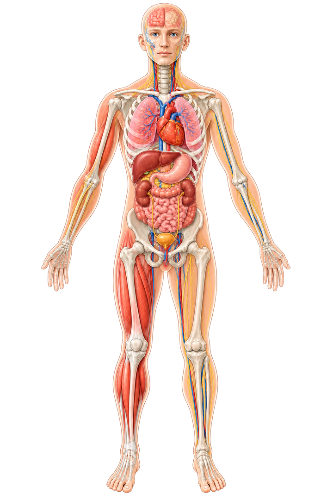

GWL-PANEL
Prototyp 0.8.1GRUNDLAGE
Planetare Grenzen und dazu passende Messreihen. Jede Aussage bleibt an ihren räumlichen und zeitlichen Bezug gebunden.
WIRKUNG
Projektionsmethode: Ohne belastbare präzisierende Faktoren wird nur der jüngere beobachtete Trend fortgeschrieben. Liegen geeignete Fachszenarien oder Einflussfaktoren vor, werden diese stattdessen verwendet und benannt.
Für diese Messreihe ist noch keine Zeitnavigation hinterlegt.
–
–
Befund
–
Wirkungspfad
–
Unsicherheit / Einordnung
–
LEBEN
Ein Wert gilt nur dann als lokal, wenn seine Untersuchung genau diesen Ort abdeckt. Daten einer übergeordneten Ebene erscheinen als regionaler oder nationaler Kontext. Globale Werte bleiben ein globaler Referenzkontext und werden nicht auf den gewählten Ort übertragen. Fehlen passende Daten, bleibt die Anzeige neutral.
Standardansicht · 18–64 Jahre

Keine lokal belegte Organwirkung für die aktuelle Auswahl.
Einordnung Gesundheit
Gesundheitswirkungen werden erst hervorgehoben, wenn ein belastbarer Wirkungspfad von der Umweltveränderung über eine konkrete Exposition bis zum Menschen belegt ist.